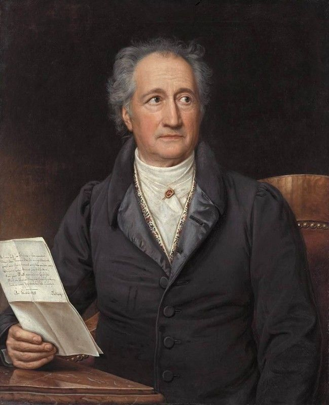

Родился во Франкфурте-на-Майне в состоятельной семье. Изучал право в Лейпциге и Страсбурге, но настоящим его призванием стала литература. В 1775 году переехал в Веймар, где занял высокие государственные должности и прожил почти всю жизнь.
Гёте дружил с Фридрихом Шиллером, вместе они создали эпоху веймарского классицизма. Умер в 1832 году, оставив после себя огромное наследие.